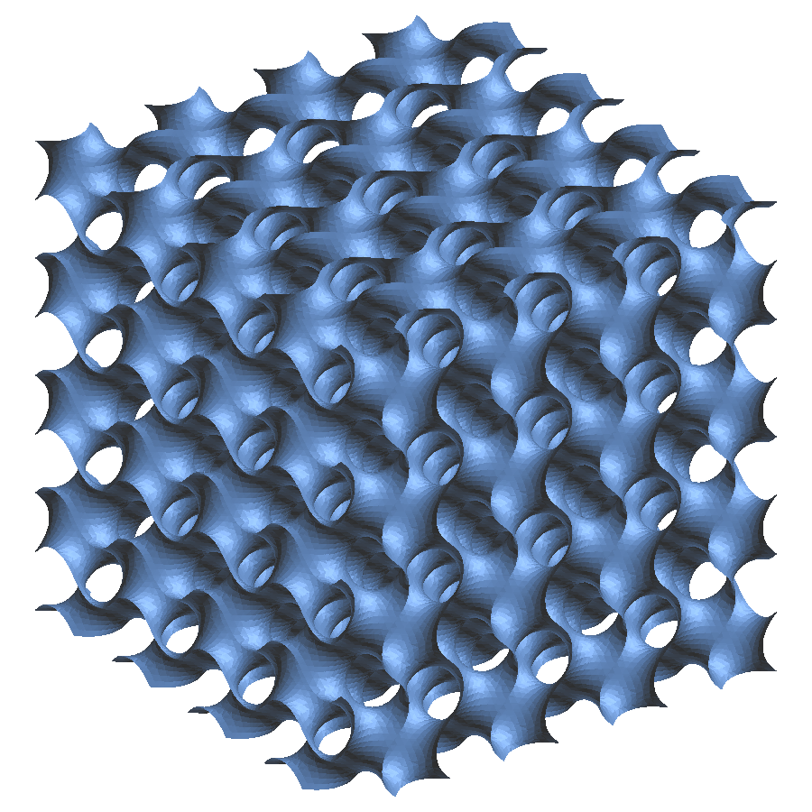
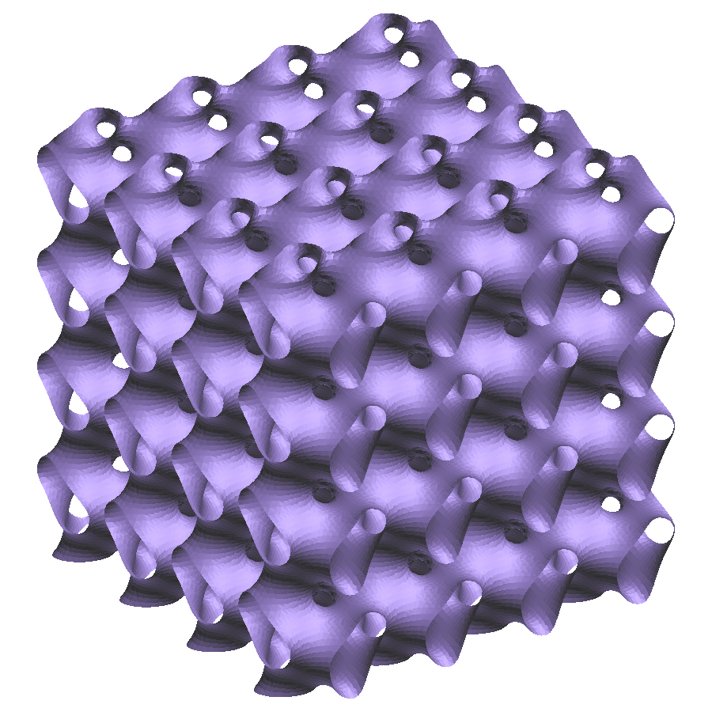
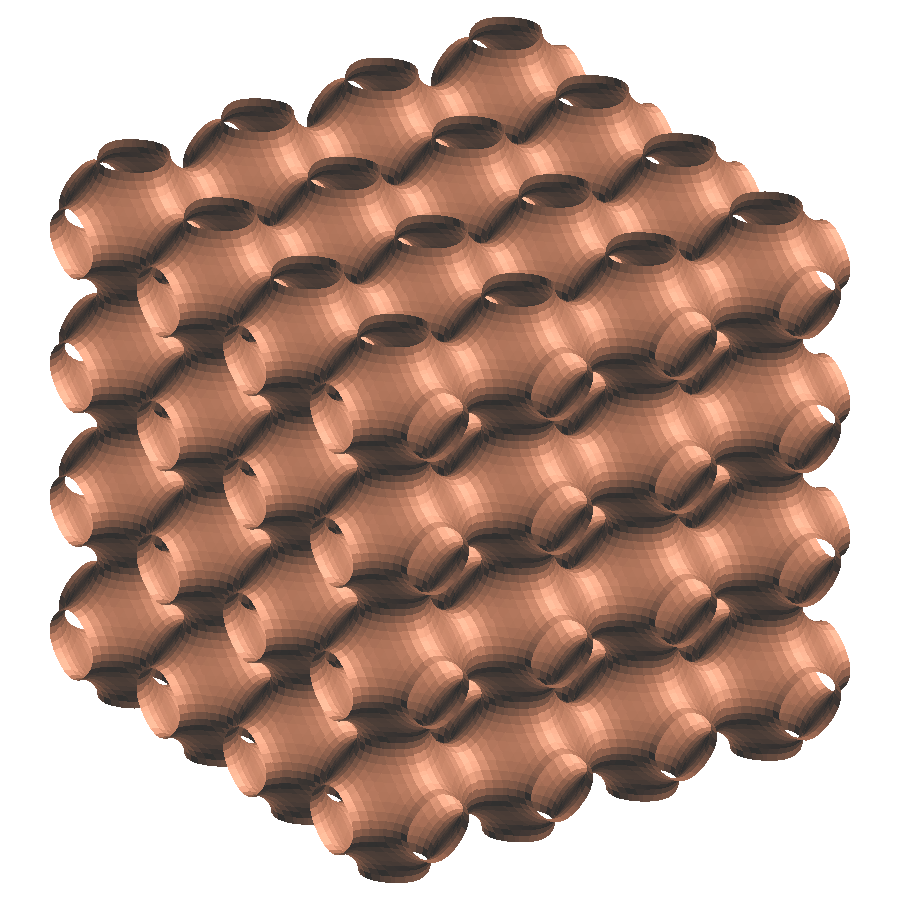
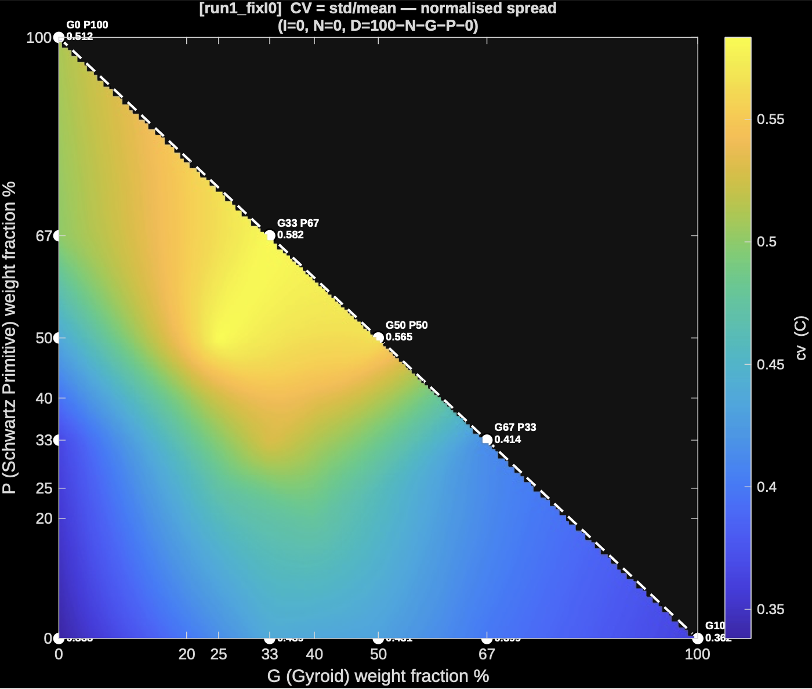
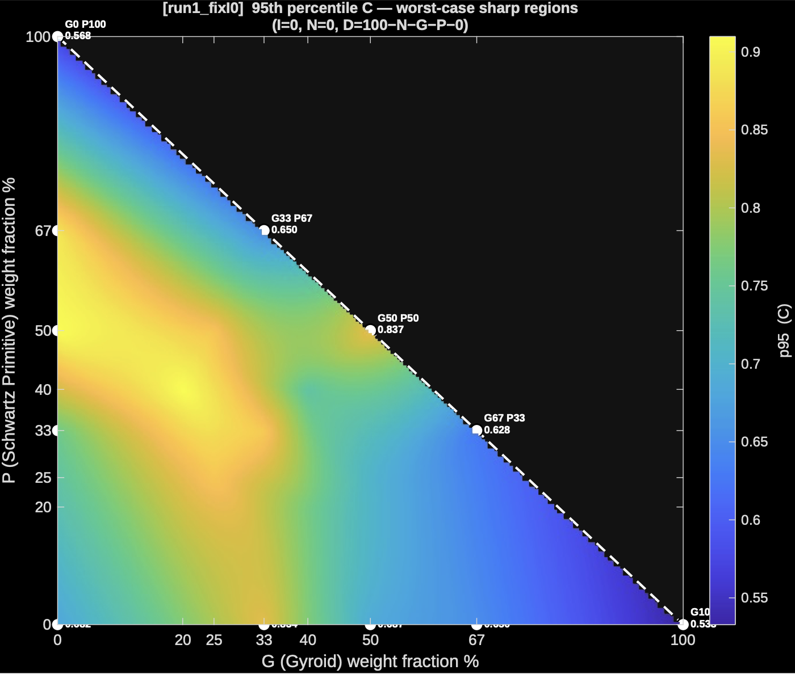

Measuring the shape of TPMS lattices
Triply periodic minimal surface (TPMS) lattices are 3D-printed structures whose performance depends on how their surfaces curve. I built two MATLAB tools to put numbers on that curvature: a 2D tool that turns any lattice STL into 29 curvature descriptors, and a 3D tool that traces how curves are organised across the analytic gyroid surface.



The project
The lab 3D-prints TPMS lattices, then electroplates them to improve their mechanical and surface properties. Blending several TPMS families gives a huge design space, and the open question is which geometric features actually explain how a lattice performs. Point-by-point curvature is the natural language for this. But a single average number throws away most of the information, and nobody had a consistent way to describe a whole lattice's curvature so it could be compared across designs or fed into a regression.
Check this framing of the lab's goal, and add what the descriptors are being correlated against (impact tests, plating quality, heat transfer?).Part 1
2D: curvature descriptors from STL meshes
What I did
The tool reads a folder of lattice STL files, works out each file's composition from its name (for example G50_N0_P50_D0_I0), and estimates the principal curvatures k1 and k2 at every mesh vertex using a cotangent-Laplacian. It cleans out degenerate-triangle spikes with a robust (MAD) filter, then summarises the curvature over the whole surface. A typical STL has 300–450k triangles and takes a few seconds per file.
The descriptors
The core of the project is the descriptor set. Instead of one curvature number per lattice, the tool keeps the whole distribution. It computes four signals at every vertex, then summarises each with seven area-weighted statistics.
| Signal | Formula | What it captures |
|---|---|---|
| C, RMS curvature | √((k1² + k2²) / 2) | How sharply the surface bends, whatever the shape |
| SI, shape index | (2/π)·atan2(k1+k2, k2−k1) | The kind of shape, from −1 to +1: cup, rut, saddle, ridge, cap. It ignores size. |
| ATC, absolute total curvature | |k1| + |k2| | Total bending in both directions, without saddle cancellation |
| W, Willmore density | (k1 − k2)² / 4 | How unequally the surface bends in its two directions (zero on a sphere) |
| Signal | mean | std | cv | p5 | median | p95 | rms |
|---|---|---|---|---|---|---|---|
| C | ● | ● | ● | ● | ● | ● | ● |
| SI | ● | ● | ● | ● | ● | ● | ● |
| ATC | ● | ● | ● | ● | ● | ● | ● |
| W | ● | ● | ● | ● | ● | ● | ● |
| S/V | one global value: surface area ÷ solid volume | ||||||
That gives 4 signals × 7 statistics = 28 columns, plus S/V: 29 descriptors per STL, written to a CSV with the composition of each lattice. Mean and Gaussian curvature (MC, GC) are also available in the code but are switched off by default.
Why distributions rather than one number? Two lattices can have the same mean curvature but very different surfaces. One is uniformly gently curved; the other is mostly flat with a few very sharp junctions. The cv (std/mean) shows how consistent the geometry is, which matters for even plating and printing. The p95 shows the worst-case sharp regions, where stress and defects concentrate.
Mapping the design space
With five blend weights summing to 100%, a 2D map means holding all but two fixed. The tool runs three slices (fixing I, D or P at zero) and draws a smooth heatmap of every descriptor across each slice, using natural-neighbour interpolation between the sampled lattices.



Slice with I = N = 0: gyroid fraction on x, primitive fraction on y, and diamond making up the rest. White dots are the lattices that were actually simulated.
What I learned
- A simple-looking formula can hide a sign error. The first versions computed mean curvature as a magnitude, so it was always positive. That silently broke the shape index on concave regions, while C and Gaussian curvature were unaffected. Projecting onto the vertex normal fixed it, and the lesson was to check each descriptor against a surface with known curvature.
- Interpolation can invent features. Cubic
griddatarang between sparse samples and drew peaks that weren't in the data. Natural-neighbour interpolation, which doesn't extrapolate past the samples, gave honest maps. - Choose the outlier threshold from the physics. A 3×MAD filter was clipping genuine high-curvature junctions. 5×MAD still removes mesh artefacts but keeps real geometry.
Part 2
3D: curve mapping on the analytic gyroid

What I did
Part 1 measures curvature point by point. Part 2 asks how the curvature is organised across the structure. Working directly from the gyroid's level-set equation, sin x cos y + sin y cos z + sin z cos x = t, rather than from a mesh, the tool traces two families of curves on the surface:
- Lines of curvature follow the directions of maximum and minimum bending.
- Asymptotic curves follow the directions in which the surface doesn't bend at all.
Along every curve it computes normal and geodesic curvature, geodesic torsion and Frenet torsion analytically, then reduces them to plain-language descriptors:
- Straightness: how far a curve gets compared with how far it travels.
- Direction memory: how far a curve runs before it forgets which way it started.
- Closed-loop share: how many curves close on themselves.
- Turning radius and twist pitch.
- A handedness index: whether twisting is biased left or right, which point curvature can't detect.
It also maps the level-set value t to wall thickness, solid fraction and S/V. Each curve-based number comes with a bootstrapped 95% confidence interval.
Every run starts with 26 self-checks. They include symbolic against hand-derived derivatives, closed-form against eigen-solved curvature, and analytic against finite-difference geodesic curvature (second-order convergence confirmed). They also confirm that curves stay on the surface to about 10⁻¹⁵, and they check the gyroid's cubic and inversion symmetry.
Results
For a sheet gyroid with a 5 mm cell, raising t from 0 to 0.8 (walls thickening from 0 to 0.89 mm) has three effects:
- The max-bending lines lose almost all their straightness (0.44 → 0.05) as they wrap around the thickening struts.
- The min-bending lines go from never closing to 100% closed loops.
- The handedness index rises from 0.00 to 0.17, revealing the gyroid's chirality.
What I learned
- An analytic surface makes a strong reference. Working from the level-set equation removed mesh noise entirely, and made it possible to validate every quantity two independent ways.
- A number is only useful with its uncertainty. Bootstrapping over curves showed which descriptors were stable and which needed more seed points. That became its own sampling study.
- Some descriptors repeat information. Several curve descriptors turn out to be identities of point curvature, so the output separates new information from redundant information before anything goes into a PCA.
Links
- tpms-3d-curve-mapping on GitHub (MATLAB, GPL-3.0)
- The 2D descriptor tool is MATLAB scripts that aren't public yet.